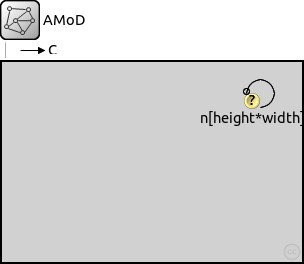
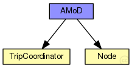
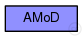

This documentation is released under the Creative Commons license
This documentation is released under the Creative Commons license(no description)
The following diagram shows usage relationships between types. Unresolved types are missing from the diagram.
The following diagram shows inheritance relationships for this type. Unresolved types are missing from the diagram.
| Name | Type | Default value | Description |
|---|---|---|---|
| height | int | 5 |
nodes on y axes |
| width | int | 5 |
nodes on x axes |
| nodeDistance | double | 1000m |
Distance between nodes |
| h | double | height*nodeDistance + 100m |
simulation area: y size |
| w | double | width*nodeDistance + 100m |
simulation area: x size |
| velocity | double | 9.7mps | ------Vehicle Parameters------ |
| boardingTime | int | 0s |
Time needed for boarding passengers |
| alightingTime | int | 0s |
Time needed for alighting passengers |
| channelTime | double | (dropUnit(nodeDistance)/dropUnit(velocity))*1s | ------Channel Parameters------ |
| coordType | string | "RadioTaxiCoord" | ------Coordinator type-------- |
| Name | Value | Description |
|---|---|---|
| isNetwork | ||
| display | bgb=$w,$h |
| Name | Type | Default value | Description |
|---|---|---|---|
| n.queue.frameCapacity | int | 0 |
max number of packets; 0 means no limit |
network AMoD { parameters: //------Network Parameters------ int height @prompt("Number of rows") = default(5); //nodes on y axes int width @prompt("Nodes per row") = default(5); //nodes on x axes double nodeDistance @unit(m) = default(1000m); //Distance between nodes double h @unit(m) = height*nodeDistance + 100m; //simulation area: y size double w @unit(m) = width*nodeDistance + 100m; //simulation area: x size //------Vehicle Parameters------ double velocity @unit(mps) = default(9.7mps); //Vehicles velocity int boardingTime @unit(s) = default(0s); //Time needed for boarding passengers int alightingTime @unit(s) = default(0s); //Time needed for alighting passengers //------Channel Parameters------ double channelTime @unit(s) = (dropUnit(nodeDistance)/dropUnit(velocity))*1s; //time needed to travel a street //------Coordinator type-------- string coordType = default("RadioTaxiCoord"); @display("bgb=$w,$h"); types: channel C extends ned.DatarateChannel { parameters: delay = channelTime; //time needed to travel the street. (propagation delay) } submodules: tcoord: <coordType> like ICoord { @display("p=600,29"); } n[height*width]: Node { parameters: address = index; x_distance = replaceUnit((index % width),"meter"); //meters from origin (x axes) y_distance = replaceUnit((index / width), "meter");//meters from origin (y axes) base_distance = nodeDistance; @display("p=,,m,$width,$nodeDistance,$nodeDistance"); gates: port[5]; } connections allowunconnected: for i=0..height-1, for j=0..width-1 { n[i*width+j].port[0] <--> C <--> n[(i+1)*width+j].port[1] if i!=height-1; n[i*width+j].port[2] <--> C <--> n[(i*width+j)+1].port[3] if j!=width-1; } }
This documentation is released under the Creative Commons license